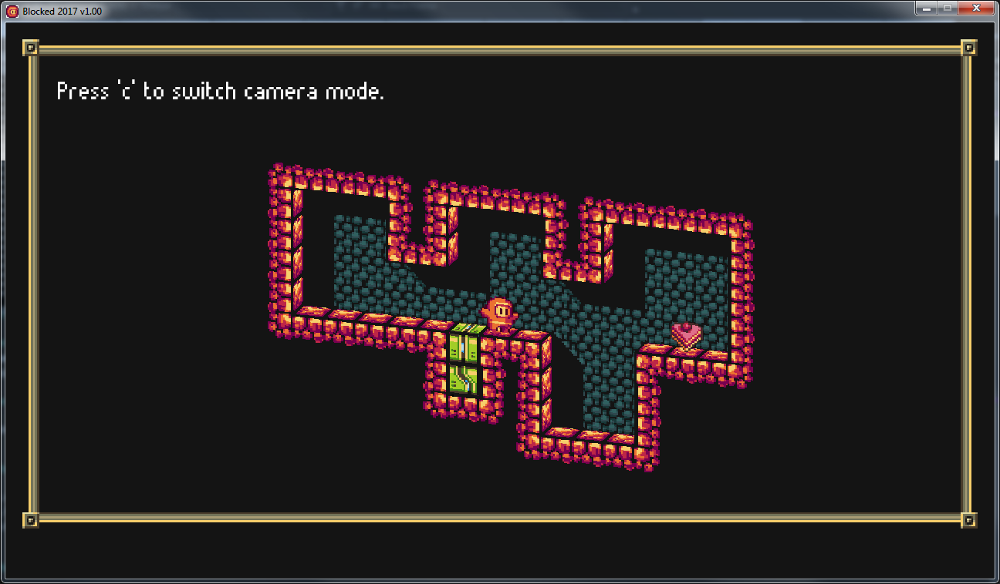

Projects
Mr.Blocked

Mr.Blocked is a puzzle game being developed using C++ 14 and SFML 2. Click the link here to view the game's website and to find out more information.
Zombie Apocalyp-tic-80

Zombie Apocalyp-tic-80 is a prototype arena shooter developed for the open-source Tic-80 fantasy console. Choose a weapon and blast your way through 10 levels. Earn talents and collect upgrades from fallen foes. Play in your browser by clicking
here.
SpaceTrade Ascii Edition - C#

This was a small project I made to learn some basic C#. It uses the console as a canvas rather than a static wall of text. It draws in real time but is very basic. It is an ascii engine I developed to make a 'text' space game like elite. It could be used to make basic platformers, shooters etc. It uses the .Net framework with no additional libraries.
Raycasting 3D Engine - SFML.Net

Originally, the dungeon crawler game I was writing was going to use this engine. It is adapted from Lode's cg tutorials. They are fantastic tutorials and found them very insightful into this particular method of rendering 3D. His examples are all in C++ but it wasn't too difficult porting it over to C#. There are a few optimizations I made to get it running at a consistent and smooth framerate.
Mr.Blocked | |
Mr.Blocked is a puzzle game being developed using C++ 14 and SFML 2. Click the link here to view the game's website and to find out more information. |
|
Zombie Apocalyp-tic-80 | |
|
Zombie Apocalyp-tic-80 is a prototype arena shooter developed for the open-source Tic-80 fantasy console. Choose a weapon and blast your way through 10 levels. Earn talents and collect upgrades from fallen foes. Play in your browser by clicking here. |
SpaceTrade Ascii Edition - C# | |
|
This was a small project I made to learn some basic C#. It uses the console as a canvas rather than a static wall of text. It draws in real time but is very basic. It is an ascii engine I developed to make a 'text' space game like elite. It could be used to make basic platformers, shooters etc. It uses the .Net framework with no additional libraries. |
Raycasting 3D Engine - SFML.Net | |
| |
Originally, the dungeon crawler game I was writing was going to use this engine. It is adapted from Lode's cg tutorials. They are fantastic tutorials and found them very insightful into this particular method of rendering 3D. His examples are all in C++ but it wasn't too difficult porting it over to C#. There are a few optimizations I made to get it running at a consistent and smooth framerate. |